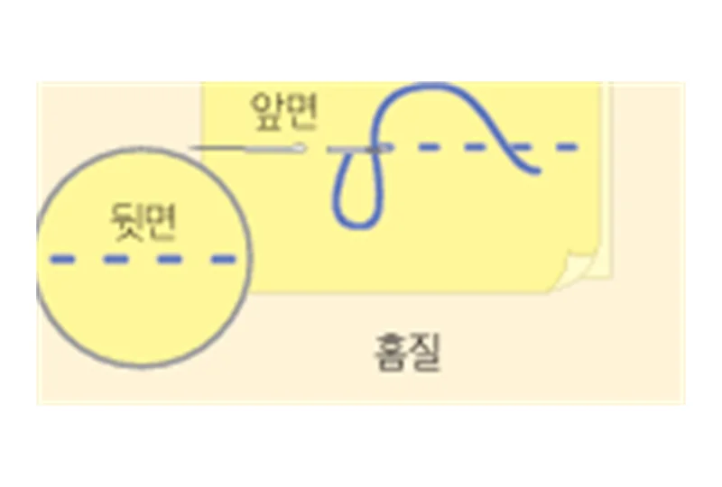
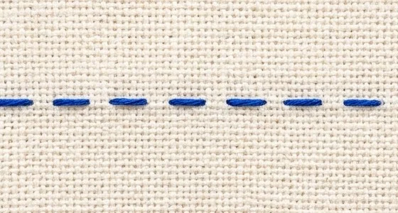
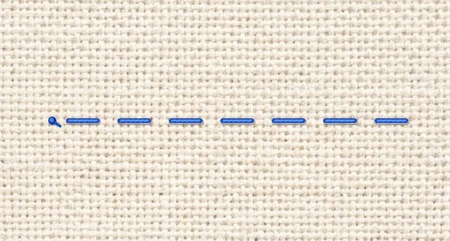
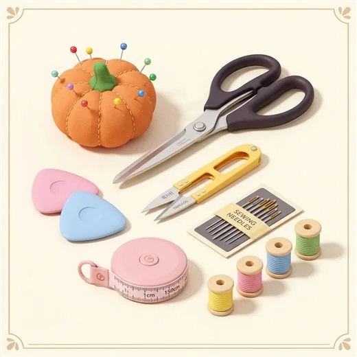
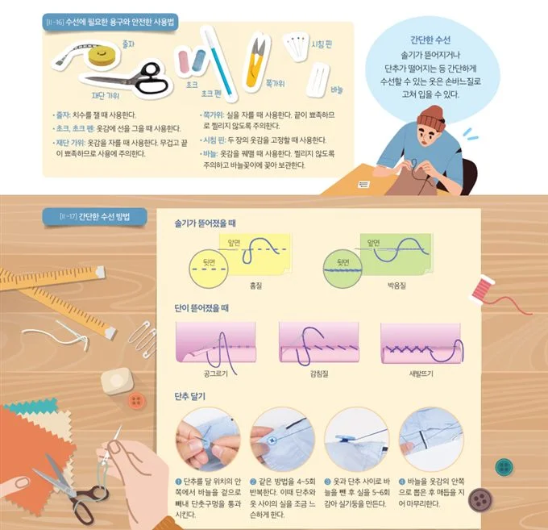

솔기가 뜯어졌을 때
진행: 오른쪽 ➔ 왼쪽
1. 홈질 (Running Stitch)
📌 언제 사용할까? (사용 상황)
🪡 어떻게 바느질할까? (핵심 방법)
👀 바느질 시작 전, 위(앞)·아래(뒤)·옆(단면)에서 본 완성 모습을 먼저 확인하세요!
📘 교과서 완성 도안
🔍 확대
(클릭하여 크게 보기)

교과서 기준 실과 바늘땀 형성도
📸 실제 완성 모습 (앞면/겉면)
🔍 확대
(클릭하여 크게 보기)

원단 위 실제 손바느질 모습 (겉면)
🔄 실제 완성 모습 (뒷면/안쪽)
🔍 확대
(클릭하여 크게 보기)

원단 아래 실제 바느질 뒷면 모습
📐 입체 단면 투시도
(3면 관찰)
옆(단면) · 위(앞면) · 아래(뒷면) 구조
📐 바느질 순서 핵심 요약
⚠️ 수행평가 핵심 포인트
📸 [II-17] 5대 바느질 기법 완료된 실제 사진 & 핵심 요약
각 바느질 기법의 완성된 실제 모습과 언제 어떻게 쓰이는지 핵심 단어로 확인하세요.
✂️ [II-16] 수선에 필요한 용구와 안전한 사용법
솔기가 뜯어지거나 단추가 떨어지는 등 간단하게 수선할 수 있는 옷은 손바느질로 고쳐 입을 수 있습니다.
줄자
치수를 잴 때 사용한다.
초크, 초크 펜
옷감에 선을 그을 때 사용한다.
재단 가위
옷감을 자를 때 사용한다. 무겁고 뾰족해 주의한다.
쪽가위
실을 자를 때 사용한다. 끝이 뾰족해 주의한다.
시침 핀
두 장의 옷감을 고정할 때 사용한다.
바늘 & 바늘꽂이
옷감을 꿰맬 때 사용하며 바늘꽂이에 보관한다.

▲ 3D 바느질 수선 도구 세트 일러스트

▲ 교과서 [II-16 수선에 필요한 용구] 및 [II-17 간단한 수선 방법]
🔘 [II-17] 단추 달기 4단계 핵심 요약
단추와 옷 사이에 실기둥을 만들어 단추를 편하게 채울 수 있게 다는 순서입니다.
[실전 수선] 솔기가 터졌을 때
1 / 5 문항
📸 수선할 옷감의 손상 상태 관찰하기
🔍 실물 사진 크게 보기
🔎 사진을 클릭하면 초고해상도로 확대됩니다